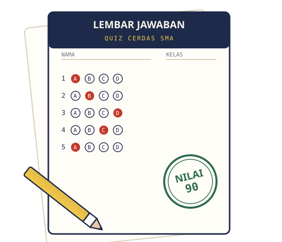

Matematika
Aljabar, geometri dasar, dan fungsi — pemanasan logika sebelum ulangan.
Kerjakan QuizQuiziest adalah website latihan soal untuk siswa kelas 10–12. Pilih mata pelajaran, isi bulatan jawaban seperti saat Ujian Sekolah, lalu dapatkan nilai dan pembahasan otomatis begitu waktu habis.

Dirancang supaya latihan soal terasa seperti ujian asli, tapi tetap santai untuk dicoba berkali-kali.
Klik salah satu kartu untuk langsung membuka lembar jawaban quiz-nya.
Aljabar, geometri dasar, dan fungsi — pemanasan logika sebelum ulangan.
Kerjakan QuizGaya, kelistrikan, dan gelombang cahaya dalam soal singkat dan padat.
Kerjakan QuizSel, fotosintesis, hingga sistem peredaran darah manusia.
Kerjakan QuizKata baku, ide pokok paragraf, dan jenis-jenis teks.
Kerjakan QuizGrammar dasar, tenses, dan kosakata sehari-hari.
Kerjakan QuizIkuti jadwal ini agar semua mata pelajaran kebagian latihan setiap minggu. Lihat panduan lengkap di halaman Materi & Panduan.
| Hari | Mata Pelajaran | Durasi | Fokus |
|---|---|---|---|
| Senin | Matematika | 3 menit | Aljabar & fungsi |
| Selasa | Fisika | 3 menit | Gaya & kelistrikan |
| Rabu | Biologi | 3 menit | Sel & fotosintesis |
| Kamis | Bahasa Indonesia | 3 menit | Struktur teks |
| Jumat | Bahasa Inggris | 3 menit | Grammar & kosakata |